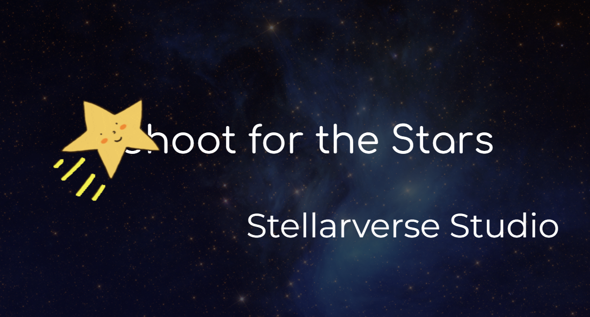

UI & Systems



For Shoot for the Stars, I worked across multiple areas of development including production, programming, UI design, and audio. I acted as the main integration point for the team, collecting assets and systems from team members and implementing them into the engine to ensure everything worked together properly. I programmed the player character and developed the full health system, including both the functionality and UI. I also created the main menu and helped polish additional gameplay systems. In addition to programming and UI work, I composed and implemented the game’s sound effects and music. Overall, my role focused on both organizing the team’s workflow and bringing all technical and creative elements together into a fully playable game.
Our game is a third person platformer with 2D cartoonish characters in a stylized 3D environment. The player is tasked with retrieving lost stars. For each star returned, the player gets a small buff to their stats and more story will be revealed. Explore the world with a grapple hook, jump pads while avoiding enemies. The goal of each level will be to reach the stars without falling or dying.
Level 1
Main Menu
Sound effects
Level 2
Level 3
Addition Level Music
Addition Level Music